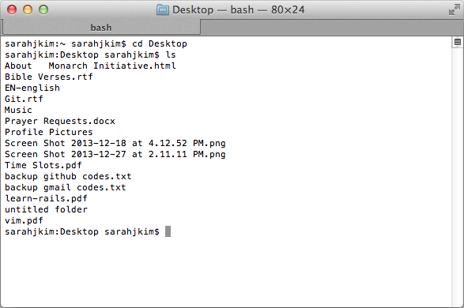
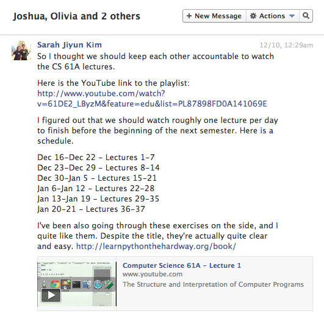
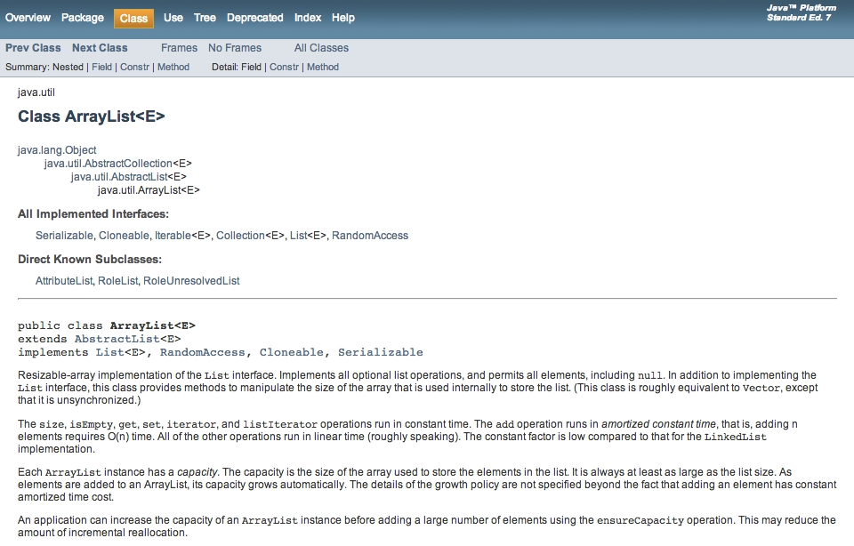
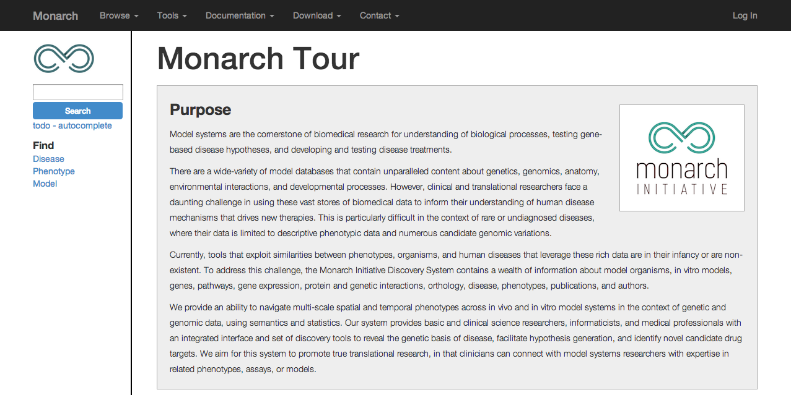
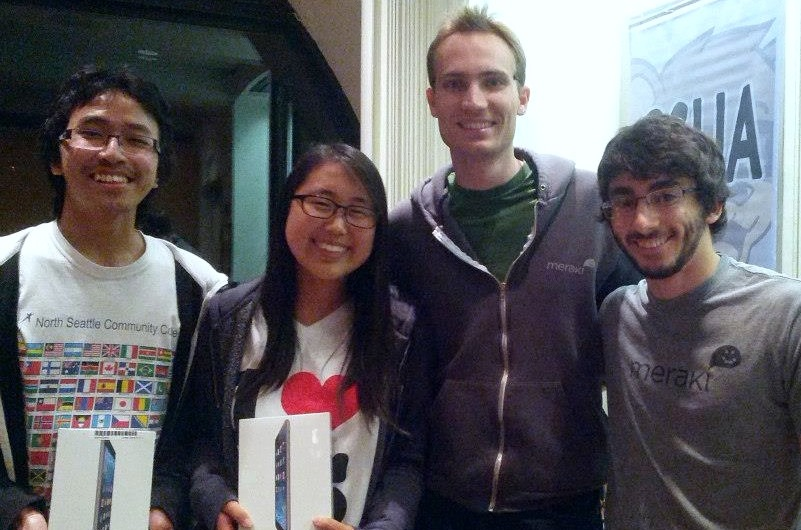

A week or so ago I realized that it's been about a year since I started in
computer science. Looking back, I am thankful for what I've learned, where I've
come, and the world I've found. And I am so grateful to those who have helped me
along the way. I thought I would make this introspective post to remind myself of
this first year of CS.
Perhaps when I am struggling through projects or facing job search rejections in
the future, I can review, remember, and refocus on why I love what I'm doing.
One Year of CS
Friday, December 27, 2013
1. Basic UNIX Commands
I clearly remember the day I decided to take CS 61A for fun. (I was still an
Applied Math & Political Science major at the time.) I was sitting at my desk
in my Foothill dorm room when I turned to my friend
Roger Chen and asked him to teach me how
to do the cool things he did on his computer. That was the day I met my Terminal
and the day I first experienced "delight" with CS.

Delighted with "cd" and "ls"
2. Python, Scheme, Java
My first programming language was Python. You can call Python my first love.
During winter break, my friends (Elizabeth Kim, Olivia Wung, Joshua Shu) and I
decided to be productive by watching
CS 61A lectures
by John DeNero. There was much fail that break, and I don't think any of us got
past lecture 15. But we all agreed that DeNero was wonderful and felt
more prepared for 61A that spring.

Our pact to be productive during winter break
I learned more about Python in 61A
and soon started thinking it was the best thing
ever. (It was at the time.) It was so easy to learn and use, and I enjoyed writing
programs and seeing how my code could do more incredible things than I could do.
I also learned Scheme (a dialect of Lisp) in 61A to learn about functional programming,
and it confirmed my belief that Python was the best.
But while I call Python my first love, you can call Java my true love. The OOP
section in 61A was my favorite part of the course, so it wasn't a huge surprise that
I enjoyed Java so much in 61B.
Well, to be honest, I didn't like Java all too much at first. Java, in my opinion,
has a much steeper learning curve than Python does.
One thing is that Python is interpreted while Java is compiled. So you can immediately
run a Python program while you need to make sure that a Java program is written
correctly before you can run it. Furthermore, Python is very high-level, so it allows
you to make assumptions about things (like variable types) while Java wants these
things to be explicit.

Java documentation is one of the best things about Java
However, I soon came to appreciate many of these about Java. For example, if you
use an incorrect type, a Java program will immediately catch this as a compile time
exception while Python might not tell you till it actually runs into an error as
the code is executing. In fact, these days, I have difficulty with Python because
I miss reading data structure documentation, using curly braces, and immediately
knowing the type of a variable.
3. Front-End Web Development
While I enjoyed building command-line programs, I was completely clueless about how
websites were created. I wondered, "What exactly is the Internet even?" So I took
CS 198, a
decal on front-end web design taught by fellow Berkeley students
Shawn Park, Jeff Zhan, and Kevin Liang.
It was a wonderful class, and I learned HTML, CSS, and front-end JavaScript/jQuery
in an evenly-paced, structured environment.
I realized that I loved building the front-end of websites. So I decided to overhaul
the CSUA's website for fun. And along
the way, I learned what a website really was - files on servers accessible to public
users. Browsers like Chrome and Firefox can interpret these files, rendering them
as webpages.

My CSUA website redesign
At the conclusion of the web design decal, I built my personal website as my final
project. This site was an exciting experience as I bought my first domain name
on Namecheap and used GitHub's user
pages to host the site in a repository.
4. First CS Job
My newfound delight in front-end web development led to my first job in computer
science. At the beginning of this month in the last week of fall semester classes,
I started my job at Lawrence Berkeley National Laboratory. I work with the
Monarch Initiative as a student
assistant web developer/designer.
I am so thankful for this job because it pays me to spend time on my hobby. The hours are flexible, my bosses are great (and really cool), and I'm learning a lot about how to build large-scale, sustainable sites (rather than small sites where all the pages are designed by hand). It is also very cool to see examples of back-end systems and widgets (even though I'm not building them). I'm very excited that the beta release will hopefully be launching this coming January!

I am so thankful for this job because it pays me to spend time on my hobby. The hours are flexible, my bosses are great (and really cool), and I'm learning a lot about how to build large-scale, sustainable sites (rather than small sites where all the pages are designed by hand). It is also very cool to see examples of back-end systems and widgets (even though I'm not building them). I'm very excited that the beta release will hopefully be launching this coming January!
Page design in progress for the beta release
But I should also note at this point that I was rejected from lots of jobs before
I got this one. I've been keeping track of my job/internship search in an Excel
spreadsheet, and the sheet tells me that I've applied to ten companies (in addition
to handing out my resume to many recruiters at career fairs), failed two coding
tests, messed up in two interviews, and gotten rejected from nearly all these
companies. I will probably continue to fail interviews and experience
rejections. And that's okay, too!
5. Participating In Hackathons
Something I have just started to do is participate in hackathons. Hackathons
are industry-sponsored coding events where you can work on projects, view the cool
hacks other students make, and stay up late with cool people (while eating food).
The first one I went to was the CSUA's Fall 2013 hackathon, and while I didn't work on my own project (I was working on a Hilfinger 61B project), I got to see some cool things other people worked on. For example, Collin Johnston and Jay Adkisson made a bash game, Daniel Rolandi made a game in Lua, the first place team made an incredible crossword puzzle solver, Ken Katagiri got the Pokemon theme song to play using a Java program (lol), and Brian Hou actually just played Pokemon!

The first one I went to was the CSUA's Fall 2013 hackathon, and while I didn't work on my own project (I was working on a Hilfinger 61B project), I got to see some cool things other people worked on. For example, Collin Johnston and Jay Adkisson made a bash game, Daniel Rolandi made a game in Lua, the first place team made an incredible crossword puzzle solver, Ken Katagiri got the Pokemon theme song to play using a Java program (lol), and Brian Hou actually just played Pokemon!
Daniel & I with Eric and Hayg from Meraki
Another thing I did for the first time was a on-campus coding challenge. At the
CSUA's Fall 2013 Coding for Grub, engineers from
Meraki made a tournament for players
in iterative
prisoner's dilemmas. In an exceedingly strange and unpredicted
turn of events, my partner Daniel Rolandi and I ended up winning the tournament
(and the beautiful iPads pictured above). In all honesty, I don't think I deserved
to win any more than the other teams in the challenge did, so the whole deal was
quite confusing. But after this incident, I realized that maybe I could make a living
as an engineer.
6. Teaching Others
When I discover something cool or interesting, I feel the need to tell others.
This is partly why I started a blog on my website (not that I find my life all
that interesting as this post is mostly for myself). It's been a long-time dream
of mine to teach others computer science. This is probably because of the wonderful
experience I had with learning CS (more on that below).

Teaching has always been a dream of mine
However, my grades have never been quite good enough to allow me to teach others.
Thankfully, I got the opportunity to be a TA for CS 198 this coming spring semester.
CS 198 is the web design decal that first introduced me to front-end web dev, so
I am really excited to share what I've learned with others. It will also be great
to see how the course is currently run and to learn more about building effective
lesson plans.
7. Falling In Love With A Major
Ever since I was a little girl, I've had lots of dreams, plans, and ambition. Even
when I didn't always know what exactly I wanted to do, I would run in some
direction or another. This drive was largely aided by wonderful parents who decided
to homeschool my brother and I and allowed me to have quite a bit of control over
my own education.
But while I had motivation, I didn't have much clarity in my goals. In junior and senior year of high school alone, I proclaimed to my parents that I would become a biologist, then a lawyer, then a teacher, and then a policy analyst. I was one of those kids that borrowed the Big Book of Jobs (complete with future projections by the US Bureau of Labor Statistics) and actually used the numbers to analyze my career options based on what I enjoyed doing and what I knew I could continue to enjoy doing in the future with relative financial security.
And despite the fact that I would always make these proclamations to my parents with conviction, I would always find things I didn't like about a chosen career path or change my mind when I found another interest. This to me was worrisome. I wanted to feel like I had a calling - a place where I fit.
But while I had motivation, I didn't have much clarity in my goals. In junior and senior year of high school alone, I proclaimed to my parents that I would become a biologist, then a lawyer, then a teacher, and then a policy analyst. I was one of those kids that borrowed the Big Book of Jobs (complete with future projections by the US Bureau of Labor Statistics) and actually used the numbers to analyze my career options based on what I enjoyed doing and what I knew I could continue to enjoy doing in the future with relative financial security.
And despite the fact that I would always make these proclamations to my parents with conviction, I would always find things I didn't like about a chosen career path or change my mind when I found another interest. This to me was worrisome. I wanted to feel like I had a calling - a place where I fit.
And then something amazing happened when I least expected it. I think God led my
path to CS. I decided to take 61A just for fun (partly because my dad and brother were
computer engineers, and I wanted to understand them better), and I fell in love.
It was nearly instantaneous. When the end of the semester neared, and it came time
to select classes for the next semester, I realized that I had poured my time and energy
into my CS class far more than I had for classes for my actual majors. And this was
because I enjoyed it so much. So I decided to switch.
When I was in high school, I hadn't even considered CS (despite the fact that all my immediate family members have technical backgrounds). I think it was expected by most people that I would major in the humanities and maybe find myself in law school. I thought programming was a dark art that was for people far cooler than I could ever be. (Don't laugh; I actually thought this.)
So I give credit to God for steering my path. Now that I've switched, I couldn't be happier and more sure that I'm finally in a major that I truly love (and one that thankfully has job security)! For the first time, my GPA is decreasing, but my happiness is increasing. I don't know what love is if it's not that.
When I was in high school, I hadn't even considered CS (despite the fact that all my immediate family members have technical backgrounds). I think it was expected by most people that I would major in the humanities and maybe find myself in law school. I thought programming was a dark art that was for people far cooler than I could ever be. (Don't laugh; I actually thought this.)
So I give credit to God for steering my path. Now that I've switched, I couldn't be happier and more sure that I'm finally in a major that I truly love (and one that thankfully has job security)! For the first time, my GPA is decreasing, but my happiness is increasing. I don't know what love is if it's not that.
8. Finding A Community
Being happy with CS for me is not just about enjoying my classes. It's also about
finding a community - a place to share knowledge, discuss interesting concepts, and
build friendships over common interests. And thankfully, I've found people that
are a community for me, people that I can be a community for.
When I first switched, I checked out lots of info sessions because there are an incredible number of CS groups at Berkeley: Computer Science Undergraduate Association, Hackers@Berkeley, Eta Kappa Nu, Upsilon Pi Epsilon, Association of Women in EECS, Society of Women Engineers, Cal Blueprint, Tau Beta Pi, IEEE, and more. Some of these clubs are not quite as applicable (and some are more exclusive than others), but there were tons of options.
When I first switched, I checked out lots of info sessions because there are an incredible number of CS groups at Berkeley: Computer Science Undergraduate Association, Hackers@Berkeley, Eta Kappa Nu, Upsilon Pi Epsilon, Association of Women in EECS, Society of Women Engineers, Cal Blueprint, Tau Beta Pi, IEEE, and more. Some of these clubs are not quite as applicable (and some are more exclusive than others), but there were tons of options.
I narrowed the list down to Hackers and the CSUA. And - quite obviously - I stuck
with CSUA. When I first attended Hackers events, I was amazed. The people there are
incredible, and the hacking culture is very inspirational. But I didn't feel like
I fit in. People there were the likes of Michelle Bu,
while I often struggled with assignments for the intro CS class. I felt lost and
at times overwhelmed by the wealth of knowledge that was available yet strangely
inaccessible.
And then I came to the CSUA. And there I found a relaxing, welcoming environment. One of the best things about the CSUA is that it's honestly for all students. We love hackers, we love experts, we love beginners, we love freshmen, etc. Everyone fits, and that made me really happy. I credit the CSUA for helping me immensely with my transition, and I recently joined the leadership team (Spring 2014 VP of Industrial Relations) so that I could help others as much as I was helped and welcomed. I will be thankful and happy if future undergraduates find community with the CSUA as I did.
And then I came to the CSUA. And there I found a relaxing, welcoming environment. One of the best things about the CSUA is that it's honestly for all students. We love hackers, we love experts, we love beginners, we love freshmen, etc. Everyone fits, and that made me really happy. I credit the CSUA for helping me immensely with my transition, and I recently joined the leadership team (Spring 2014 VP of Industrial Relations) so that I could help others as much as I was helped and welcomed. I will be thankful and happy if future undergraduates find community with the CSUA as I did.

Spring 2014 CSUA Politburo
I also met lots of incredible people through other means, like the lovely Momo Day
crew (you know who you are) and friends in classes. I am so excited to develop
my friendships with these wonderful people and to meet more people who continue
to surprise and inspire.
9. Bonding With My Family
My dad is computer systems architect (he designs the connections between software
and hardware to bring products together at a whole), my mother majored in math
(and took assembly language in college), and my older brother is a computer science
major specializing in UI design at Cornell.
Thus, learning more about computer science has deepened my bonds with my family members. I have always thought my dad was incredible, but I am now finally able to understand more about what he does and how truly amazing he is. As I become an engineer, I have a better appreciation for my mother's sacrifice of her career to raise my brother and I. And I am able to talk with my brother about interesting CS research and ask him for advice on my classes.
CS has brought my family closer together, and I am excited that there is another thing now that we all have in common. In fact, we're going to CES together this break as a family, and I'm stoked!
Thus, learning more about computer science has deepened my bonds with my family members. I have always thought my dad was incredible, but I am now finally able to understand more about what he does and how truly amazing he is. As I become an engineer, I have a better appreciation for my mother's sacrifice of her career to raise my brother and I. And I am able to talk with my brother about interesting CS research and ask him for advice on my classes.
CS has brought my family closer together, and I am excited that there is another thing now that we all have in common. In fact, we're going to CES together this break as a family, and I'm stoked!
10. Planning for the Next Year
As I review all the crazy changes that have taken place over the course of one year,
I've become more excited about what will come. Academically, I'll be taking CS 61C
(Computer Architecture), CS 170 (Algorithms), and Math 104 (Real Analysis) in the
spring. I loved the introductory algorithms in CS 70, so I'm looking forwards to
getting a better understanding of theoretical computer science and to reading more
research papers.
For web development, I hope to gain back-end skills. I'm planning to learn and use Ruby and/or Django (maybe Scala because I love Java so much). Perhaps I'll get to see some more interesting back-end stuff at work. And hopefully I'll try my hand at hacking real projects at the next hackathons.
With the CSUA, I hope to host incredible events with the rest of Politburo and to develop future leaders that will continue our club's progress when its current leaders will have graduated.
I also hope to find more balance in my life and to prioritize my walk with God and my relationships with other people. And I want to keep in touch more regularly with my family, especially my brother.
For web development, I hope to gain back-end skills. I'm planning to learn and use Ruby and/or Django (maybe Scala because I love Java so much). Perhaps I'll get to see some more interesting back-end stuff at work. And hopefully I'll try my hand at hacking real projects at the next hackathons.
With the CSUA, I hope to host incredible events with the rest of Politburo and to develop future leaders that will continue our club's progress when its current leaders will have graduated.
I also hope to find more balance in my life and to prioritize my walk with God and my relationships with other people. And I want to keep in touch more regularly with my family, especially my brother.

Extremely relevant xkcd comic
The journey has just started. There is a lot to learn and do. But I know
that I can continue to work hard. And more importantly, I know that others will
continue to support me - incredible professors, smart TAs, helpful fellow students,
driven CSUA leadership, inspiring friends, and loving family. And I know that God
will continue to direct my life in the years ahead.
If you have supported me or taught me this past year, thank you so much! Please continue to watch out for me as I have much to grow. If you want to get more involved in the Berkeley CS community and don't know how, feel free to drop by the CSUA. We don't bite. And thanks for reading!
If you have supported me or taught me this past year, thank you so much! Please continue to watch out for me as I have much to grow. If you want to get more involved in the Berkeley CS community and don't know how, feel free to drop by the CSUA. We don't bite. And thanks for reading!